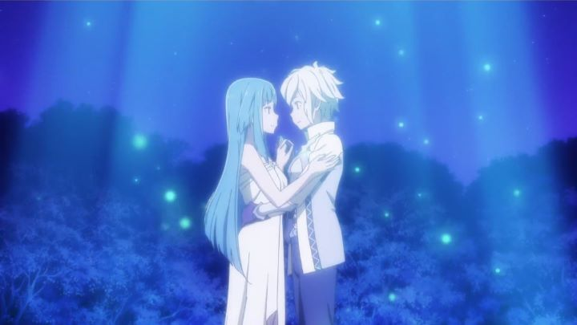

"It It Wrong To Pick Up Girls In A Dungeon?" (refered from now as "DanMachi") was a relatively popular 2015 anime series with plenty of room to grow. But as part of an increasingly common phenomenon, the anime industry didn't prepare a sequel for a long time (we'll ignore the spin-off series that did arrive shortly after). Was it because J.C. Staff, one of the busiest studios in anime, was simply too busy to fit in a second season in their schedule? Was it because the light novels it was based on needed time to write more story? We'll never know, and will never know why a second season, as well as a feature film, were greenlit to release in 2019, a notable time later. Only time will tell if fans still remember it enough to return.The feature film, being released before the second season, is called "Arrow of the Orion," and features an original story, based off a scenario specially prepared by the original light novel author. For better or for worse, I would call it a "shonen action movie," comparable to those occasional movies based on infinitely-running shows like "One Piece" or "DragonBall Z." Like those, the movie is fun but inessential, and your enjoyment will correspond to your existing knowledge and love for the characters. If "DanMachi" isn't already one of your favorite series, you won't care much for "Arrow of the Orion." In my case, it was a fun diversion to remind me who the characters were in preparation for the sequel season, but not much else.In "DanMachi," the world is a fantasy loosely inspired by Greek design and JRPG video games. Literal dungeons full of monsters exist underneath the large town of people, and "adventurers" make a living defeating them and collecting the gemstones left behind in a poof of dust. Bell Cranel is still a noble hero, leveling up his skills, serving underneath the Goddess Hestia as her only familia member. In this movie, Bell finds himself being chosen in a scheme by God Hermes and a new character, the Goddess Artemis. Under the guise of a contest, Bell is asked to help defeat a monster far away from the city, using a special spear that only he, a uncorrupted soul, can wield. So they set off, so that the chosen hero can save the day. Bell was always a bit too perfect, able to defeat almost anything without real danger, so there's little concern that the gang won't succeed. For most of the movie, the draw is the comedy. Hestia is as busty, ditzy and jealous as ever, fawning over Bell and pouting whenever anyone else gets close to him. Hermes seems to know more about things then he lets on at first, but still goofs off like he did in the show. With the presence of Artemis, who seems to fall quickly for Bell herself, Bell's entire little harem seems to get jealous, all to the delight (or perhaps slight annoyance) of the viewer. When action does take place, it's almost exclusively on armies of large black CGI scorpions, reused over and over, with little variation (a common issue in video games as well). Artemis is the main feature of this original story. Hestia immediately recognizes her, but Artemis isn't how she remembers: the once proud and strong warrior of chastity is now quiet, forgiving, and immediately has feelings for Bell, despite normally despising any act of love. The movie relies on her secret, revealed at the final battle, a giant scorpion that looks like a rejected "Legend of Zelda" dungeon boss (complete with a similar open room to fight in). It's an emotional revelation, but not quite as emotional as the movie wants it to be, making Artemis' fate lack the punch it deserved. At less than an hour and a half, the movie simply doesn't have enough time to make her character meaningful, and the attempts to set it up aren't efficient enough to do the job. It doesn't help that Artemis is a quiet amnesiac who only rarely speaks to fawn over Bell: a disappointing character, and not just because of her treatment as a female. Production values are a bit of a disappointment. The show looked good in 2015, and the feature film, meant for movie theaters, looks about the same, if not slightly worse. Characters return with the same designs, and new elements (Artemis and the scorpions) feel like only a slight addition to things we've seen before. Taking place mostly indoors or at night, colors are a bit muted. Animation is a bit workman-like, never quite reaching the quality of the best action scenes of the first season. Fans might be interested to know there's plenty of fanservice content, particularly of the girls' underwear (one producer in a Japanese interview admitted one of his favorite scenes was Hestia and Artemis having "pillow talk" in their pajamas). Things get better in time for the final battle with the big scorpion, taking a bit less than 15 minutes of time. Finally, stakes feel a bit more real, and any emotional payoff the movie has gets fullfilled. Action is better animated and choreographed. It still isn't quite as good as the best moments from the first season, but it comes close. If the entire movie was able to utilize that same level of energy and emotion, it might have been a bit more worthwhile. Otherwise, there really isn't any reason to see this movie on a big screen, save for the sound effects, where clashing weapons echo with renewed power in surround sound. Which makes up for the otherwise lost-in-noise soundtrack. And as a caveat, you have to put up with shrieking girls arguing with each other at that loud volume too.I still like "DanMachi" and its characters. There's something pure about its simplistic story and world, driven by action and comedy. But like a procedural dungeon-crawling RPG, the series could go on forever without end, and I have to pick my stories carefully to make the most of my time. "Arrow of the Orion" is a fun diversion, but not much more than that. If you haven't already been invested in the series, there isn't anything exceptional to see here.
- "Ani" More reviews can be found at : https://2danicritic.github.io/ Previous review: review_Inu_x_Boku_-_Secret_Service Next review: review_Is_It_Wrong_To_Try_To_Pick_Up_Girls_In_A_Dungeon